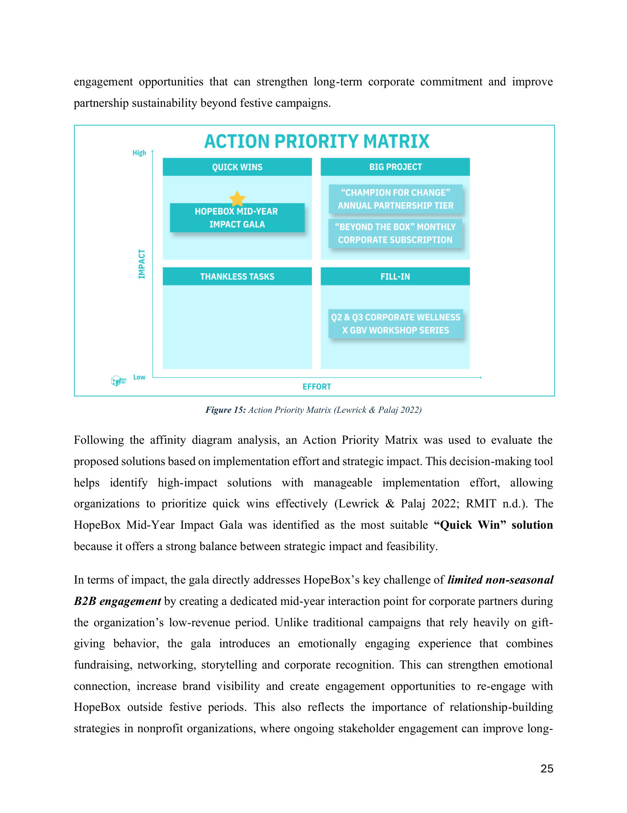
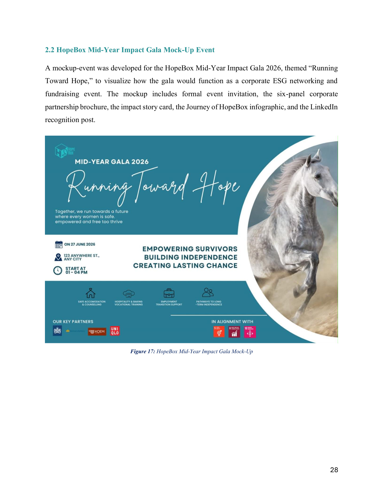

HopeBox
A Design Thinking case study that turned seasonal B2B revenue instability into a relationship-management problem — then built a practical intervention around it.
The business problem
HopeBox is a Vietnamese social enterprise supporting women survivors of gender-based violence through employment, training and broader transition support. The project focused on a business problem: corporate engagement and B2B purchasing were concentrated around festive seasons, creating unstable revenue across the year.
Corporate B2B partners
Desirability · Feasibility · Viability
Project scope
This team project used Design Thinking to move from a broad seasonal-revenue problem toward a stakeholder-centred intervention. The portfolio case focuses on the process evidenced in the final report rather than claiming individual ownership of every output.
From diagnosis to solution
01 — Reframe the problem
The report found that the issue was not simply low interest. Corporate partners lacked structured reasons to engage beyond seasonal campaigns.
02 — Prioritise the stakeholder
Corporate B2B partners were selected because of their direct influence on revenue continuity and partnership sustainability.
03 — Compare solution routes
Ideas were grouped and evaluated using an Action Priority Matrix based on strategic impact and implementation effort.
04 — Prototype the quick win
The Mid-Year Impact Gala was prioritised as the most balanced quick-win concept: a corporate ESG networking and fundraising event supported by invitations, partnership materials, impact storytelling and LinkedIn recognition.
Selected proof
A curated view of the work. The full files are embedded below so the case study stays readable without hiding the evidence.


Project files
Preview the source material directly here, or open it in a new tab for full-screen reading.